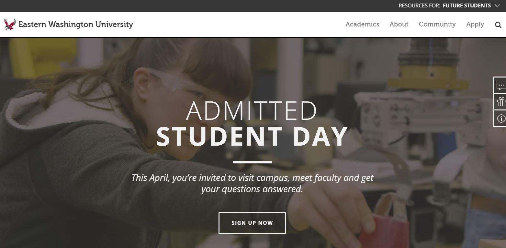
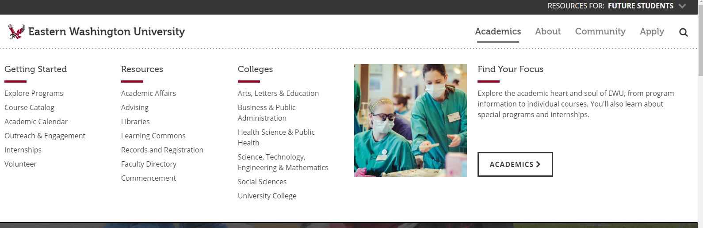
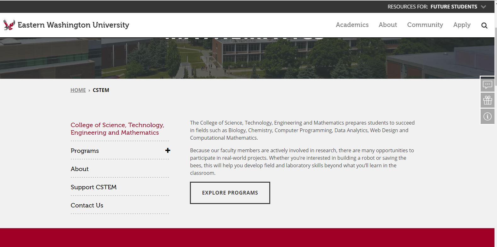

WATS400: Eastern Washington University
Even when I was a student there, I could never find anything that I was looking for on the Eastern Washington University website. They've gone through a few updates since then but let's see if they've gotten any better.
As the main online portal for Eastern Washington University, this website serves to provide current, past, and future students with information regarding, the programs and facilities available at the college.
For the viewers at home, I'm looking atEastern Washington University
 Screenshot of the EWU HomepageThe Criteria
I have separated my evaluation into 4 areas of Opportunity:
- Navigation - Can I easily find the program or information that I'm looking for?
- Design - Are the colors working, is the page easy to read? To follow? Does the design remain consistent throughout the site?
- Orgainization - Is the website consistent? Am I able to find the information that I'm looking for?
- Creativity - Does this website have "sticking power" am I dawn back to this site because of the content, the images, the design?
Navigation: Can I Find What I'm Looking For?
 Screenshot of the Drop-Down MenuSo the site as a new design on the front page, there is a menu at the top right with options for Academics, About, Community, Apply, and the Search bar. I'm going to look for the Computer Science program as a test:
Via the search bar - I typed in "Computer Science" and clicked on the first result, and it worked. Not bad!
Via the Academics tab - From Academics/Colleges/ Science, Technology, Engineering/ Landing page - There's a Program's folder and Computer Science link...and I'm here, a lot more work.
Design: Is the design consistent throughout the site?
The front pages of the website are a beautiful modern, clean design. However,
once the user gets into the program page, the website changes to a much older
more clunky design.

Screenshot of the EWU Computer Science Landing Page
The first time I saw the change I wondered if I had somehow
navigated away to a different website, it was very jarring. I like the cleaner
design, I hope it is the school's intention to incorporate it throughout the site.
The order model is just so cluttered!
Organization: How is it to locate information on the site?
Building off the navigate, the website is pretty easy to navigate, once you wrap your head around the categories. When the information system fails though is when you get into the program-specific page; once there, the styling changes and the website becomes very cluttered.
Creativity:Is the design eye-grabbing or interesting?
The redesign is wonderful compared to the older parts of the site. The color-scheme: grey, black
and red is very easy to read and it's the official colors of the school.
The information architecture is a little clumsy, but there also is a lot of information to contain within the site. By nature, this
information has to be categorized into larger denominations.
I had grumbled when I was trying to find
the Computer Science program page without using the search bar but honestly, I don't know how they could
have made in less clicks, other than listing all the programs as a list...which again is not very clean.
There is always a lot of information a university needs to have available to their students. This website is not perfect; but if they continue to modernize the pages, they will have a very nice, crisp portal to present.